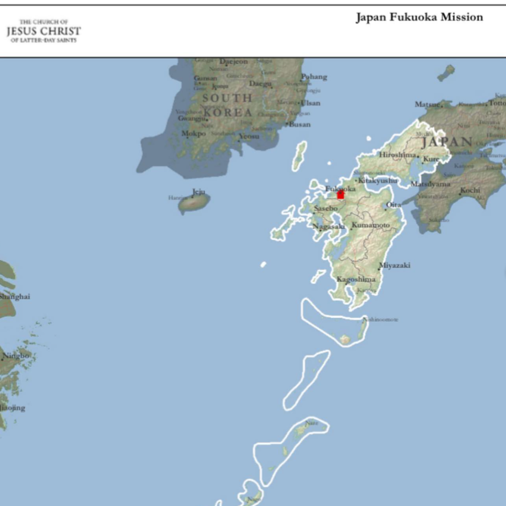
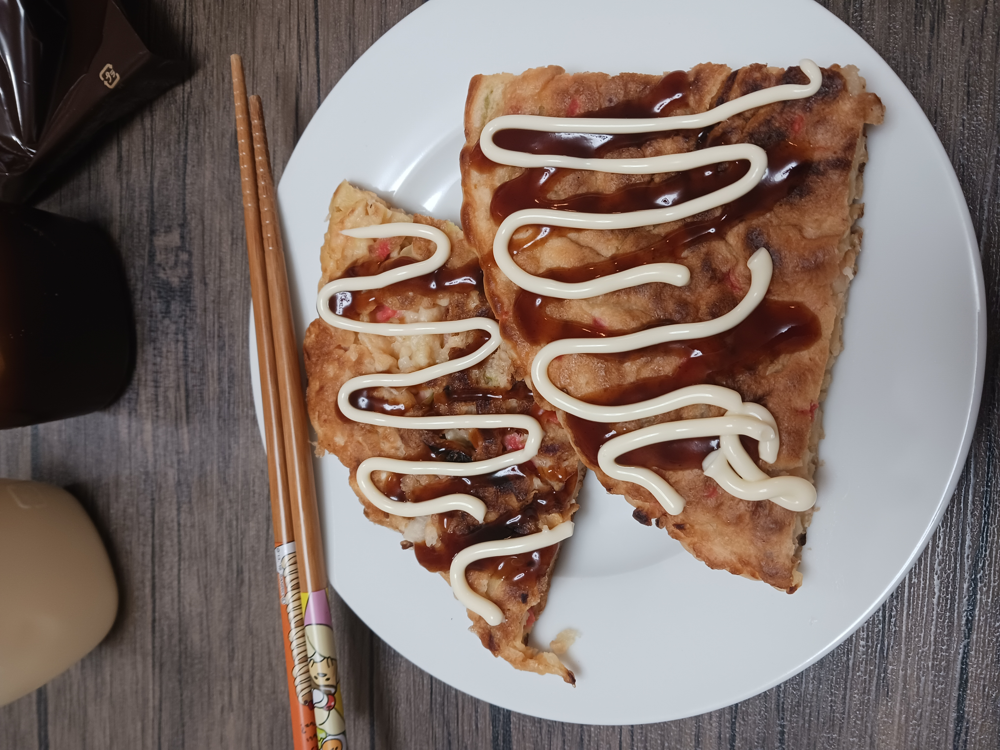
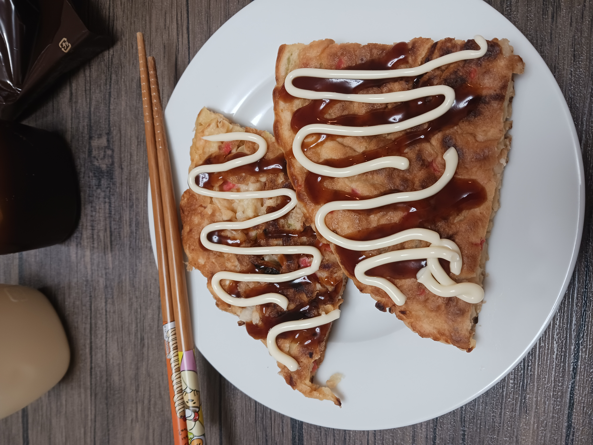
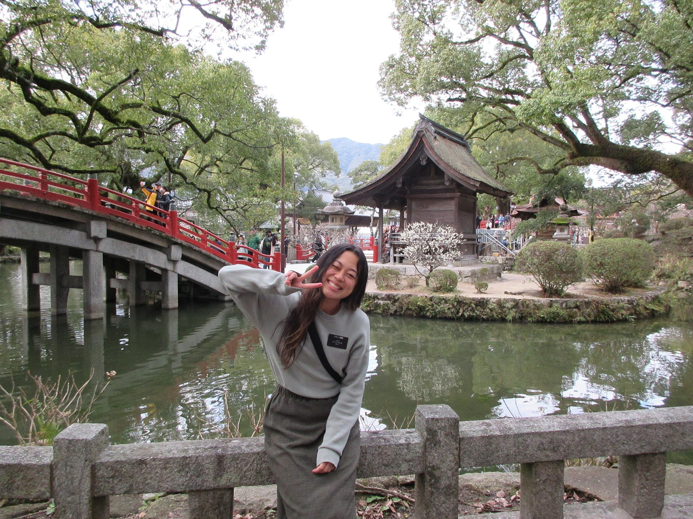

Check out my Facebook Page!
Japan Fukuoka Mission: The Best Eighteen!
Check out my Facebook Page!
Why I did it all: No one in my immediate family ever served as a full-time missionary for The Church of Jesus Christ of Latter-Day Saints, but that didn't stop me from wanting to serve. My family was blessed by missionaries in the past who chose to leave their families for 18-24 months so that others can taste of the sweetness of the gospel. In short, I looked at all the good things I have because of Jesus Christ and wanted others to have those things too. I feel priviledged to have been able to serve the Lord to the people of the Japan Fukuoka misison. I'll thank Heavenly Father for the rest of my life that I had that chance.
Let me tell you a little bit about it all!
 |
|  | 
| 


I love the Japan Fukuoka Mission, and I love Jesus Christ.

Back to Top